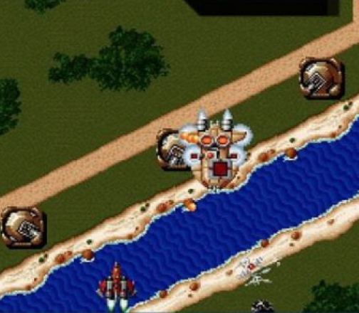
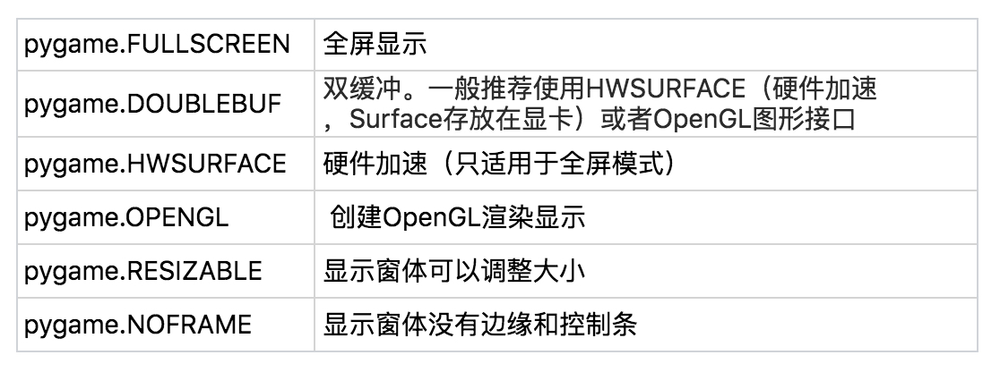
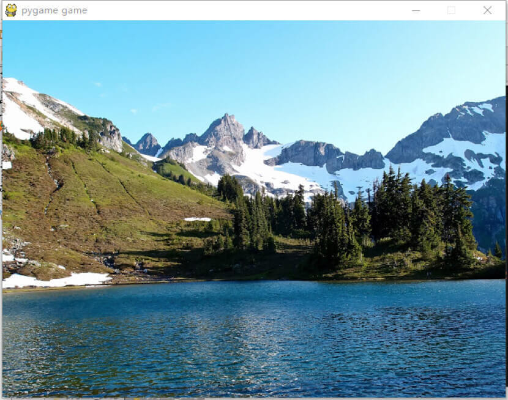
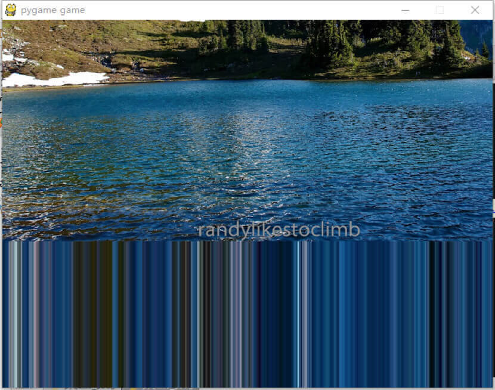
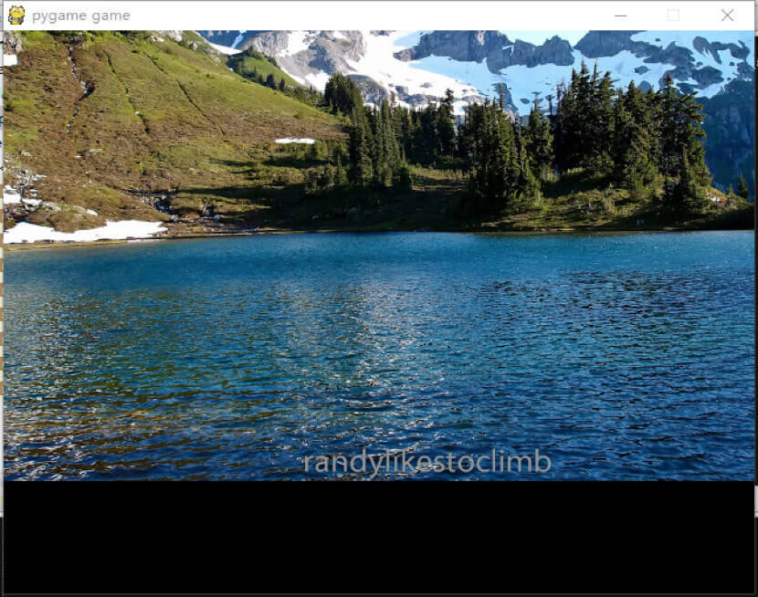

- 00 开篇词 跟我学，你也可以开发一款游戏！.md.html
- 复习课 带你梳理客户端开发的三个重点.md.html
- 第10讲 如何载入“飞机”和“敌人”？.md.html
- 第11讲 如何设置图像的前后遮挡？.md.html
- 第12讲 如何设置精灵的变形、放大和缩小？.md.html
- 第13讲 如何设置淡入淡出和碰撞检测？.md.html
- 第14讲 如何制作游戏资源包和保存机制？.md.html
- 第15讲 如何载入背景音乐和音效？.md.html
- 第16讲 如何在游戏中载入UI和菜单？.md.html
- 第17讲 如何用鼠标和键盘来操作游戏？.md.html
- 第18讲 如何判断客户端的网络连接？.md.html
- 第19讲 如何嵌入脚本语言？.md.html
- 第1讲 游戏开发需要了解哪些背景知识？.md.html
- 第20讲 脚本语言在游戏开发中有哪些应用？.md.html
- 第21讲 如何使用脚本语言编写周边工具？.md.html
- 第22讲 如何选择合适的开发语言？.md.html
- 第23讲 如何定制合适的开发协议？.md.html
- 第24讲 不可忽视的多线程及并发问题.md.html
- 第25讲 如何判断心跳包是否离线？.md.html
- 第26讲 如何用网关服务器进行负载均衡？.md.html
- 第27讲 如何制作游戏内容保存和缓存处理？.md.html
- 第28讲 热点剖析（一）：HTML5技术是如何取代Flash的？.md.html
- 第29讲 热点剖析（二）：如何选择一款HTML5引擎？.md.html
- 第2讲 2D游戏和3D游戏有什么区别？.md.html
- 第30讲 热点剖析（三）：试试看，你也可以编写一款HTML5小游戏！.md.html
- 第31讲 热点剖析（四）：安卓端和苹果端游戏开发有什么区别？.md.html
- 第32讲 热点剖析（五）：如何选择移动端的游戏引擎？.md.html
- 第33讲 热点剖析（六）：AR和人工智能在游戏领域有哪些应用？.md.html
- 第34讲 热点剖析（七）：谈谈微信小游戏的成功点.md.html
- 第35讲 热点剖析（八）：谈谈移动游戏的未来发展.md.html
- 第36讲 热点剖析（九）：谈谈独立开发者的未来发展.md.html
- 第3讲 游戏的发动机：游戏引擎.md.html
- 第4讲 底层绘图接口的妙用.md.html
- 第5讲 构建游戏场景的武器：地图编辑器.md.html
- 第6讲 从0开始整理开发流程.md.html
- 第7讲 如何建立一个Windows窗体？.md.html
- 第8讲 如何区分图形和图像？.md.html
- 第9讲 如何绘制游戏背景？.md.html
- 结束语 做游戏的过程就像是在雕琢一件艺术品.md.html
- 课后阅读 游戏开发工程师学习路径（上）.md.html
- 课后阅读 游戏开发工程师学习路径（下）.md.html
- 捐赠
第9讲 如何绘制游戏背景？
我在之前的文章中描述了各种基础知识，然后梳理了开发流程，并带你创建了一个窗体，现在我们要做的就是朝这个窗体里添加东西。
我会随着进度逐渐提升难度。就现阶段来讲，我们涉及的只是一些基础知识，并且只需要将大部分的关注点放在我们要做的游戏内容上，并不需要关注过多的底层逻辑代码。
做事情都有先后顺序，做游戏开发自然也是。为什么要学习先绘制游戏背景而不是别的什么，很简单，因为只有先绘制了游戏背景，才能进行后续的游戏图像遮挡、图形图像的显示等等操作。
不管你有没有玩过《超级玛丽》《魂斗罗》《雷电》之类的游戏，但一定对其画面不陌生。和我们要开始做的打飞机游戏一样，这种类型的2D游戏，其背景不是左右卷轴，就是上下卷轴。所谓左右卷轴，就是游戏画面是横向的、左右运动的，而上下卷轴就是游戏画面是竖直对的、上下运动的。

像《雷电》这样的经典飞机游戏，就是属于上下卷轴的。上下卷轴的飞机游戏有一个特点，就是它是在空中，从凌驾于飞机之上的视角，往地面俯瞰的。因为是俯视角，所以我们可以很方便地看到游戏的整体地图，包括地面上的敌人、空中的敌人等等，层次感会很强。
因此，可以确定，我们要做的打飞机，也是一个上下卷轴的游戏。这样，我们就可以着手将需要的图片添加进去了。
我们要使用Pygame，先读取一个图片，让该图片成为游戏背景并载入进去。当下阶段，我们的图片从哪儿获得并不重要，因为在一个完整的游戏开发团队里面，都有专业的美术团队负责作图，但是现在我们没有，所以我就自己贴一幅图来代替正式的游戏背景。所以你现在只需要知道背景是如何贴上去的就好了。
和前面的文章说过的一样，我们需要先载入Pygame模块，并且定义一个变量background。我们将一幅名为lake,jpg的图片文件赋值给backgroud变量。
import pygame
background = 'lake.jpg'
然后，我们先把Pygame的所有组件都初始化。接下来，我们调用display类里的set_mode函数来对屏幕进行一个初始化。
pygame.init()
screen = pygame.display.set_mode((640, 480), 0, 32)
pygame.display.set_caption("pygame game")
这里一共有三个参数，第一个参数是分辨率，比如我这里编写的是640x480的分辨率；第二个参数是flag，flag的参数我放在下面这个表里了；第三个参数是32，32代表的是颜色深度，这里是32位的意思。

在设置完了窗体模式之后，后面的一段代码就是设置窗体的抬头文字，这里显示的是pygame game。
随后，我们要载入背景的图片。
bg = pygame.image.load(background).convert()
我在前面的文章中也说过，这句话的意义是，载入backgroud图片。但是pygame.image.load这个函数返回的是一个surface，而.convert函数是来自于surface对象。你可以参考下面的代码来理解。
surface_temp = pygame.image.load(background)
bg = surface_temp.convert()
其次，bg这个变量也是一个surface，而convert函数的作用是改变一副图片的像素格式。convert有四个相同名字的重载函数。如果就像我们的代码里所示，convert没有任何参数，则表示直接返回一个surface对象。
好了，现在我们设置完了背景bg的surface，我们按照上面的文章，开始写一个大循环，并且在循环里面进行检测鼠标事件是不是退出操作，这是最基本的一项检测。
while True:
for event in pygame.event.get():
if event.type == QUIT:
pygame.quit()
和前面的文章一样，我们从event里取出事件列表，然后把每一个event的类型进行对比，如果发现有QUIT事件（鼠标点击X关闭按钮后），就直接退出游戏。完成这一步之后，就可以开始使用blit函数进行绘制屏幕的操作。
screen.blit(bg, (0,0))
这句话的意思是，使用blit将bg在以游戏屏幕x,y轴为（0,0）的坐标位置在screen对象上绘制背景图像。然后我们需要update刷新屏幕，添加下面这行代码。
pygame.display.update()
upadate这个函数是 pygame.display.flip 函数的优化版。因为pygame,display.flip是更新整块屏幕，所以如果加载的资源多，效率并不是很高，而update如果传递一个矩形值得参数的话，它会只更新这块矩形的内容，所以效率会比较高，但是不传递参数的话，默认还是会更新整块屏幕，但是这个函数不能用在set_mode的时候设置为OpenGL的模式下。
好了，我们该做的事情基本都做完了，现在我们来运行一下，看看效果。

好了，背景是贴上去了。现在问题来了，要想让背景动起来该怎么做呢？如果在blit的时候，改变坐标是不是就可以移动背景图的位置了呢？你再开动脑筋想想，该怎么做才能让背景移动起来？
对的，我们只需要写一个循环，就可以将背景移动起来。
我们来修改一下大循环开始的代码。
y_move = 0
while True:
for event in pygame.event.get():
if event.type == QUIT:
pygame.quit()
screen.blit(bg, (0,y_move))
y_move-=1
我们在大循环开始之前，在这段代码里定义了一个y值移动的变量，而我们每循环一次，blit就绘制一次屏幕，y值都会被减去1，所以我们每次看到的图片，都会不停往上移动，我们来看一下效果。

发现问题了没有，在移动的过程中，下方的图案居然没有被刷新，直接黏在了屏幕上，看起来是不是很恶心的样子？
我们应该怎么做才能达到正常的效果呢？也就是说，请你思考一下，应该怎样做，我们才可以将这个令人头疼的图像在移动的时候变得正常呢？
我们先来回顾一下，我们在循环里面做了哪些步骤：
检测退出事件；
在屏幕上绘制bg对象，坐标初始为（0, y）；
飞机每移动一格，坐标y减1；
更新屏幕。
看起来似乎没有什么问题，我再来带你梳理一下。
首先我们初始化的时候，屏幕是黑屏一块，没有任何图像，然后我们进入大循环，将bg对象绘制到屏幕上的时候，你觉得这时候我们的眼睛看到绘制的图像了吗？
如果你说是的话，那就大错特错了，因为这个blit的动作，仅仅是绘制，而不是显示。请记住这个区别：绘制不等于显示。
那你可能就要问了，既然绘制了，为什么不显示呢？要什么时候才能显示呢？答案是，要在update一次屏幕的时候，才会显示，这就是“更新”的作用。就像电影是一帧一帧的，如果没有下一帧更新，电影就会永远定格在某一秒。
所以问题逐渐就暴露出来了，我们再来重新梳理一下流程：
检测退出事件；
在屏幕上绘制bg对象，坐标初始为（0, y）（注意是绘制，不是显示）；
飞机每移动一格，坐标y就减1；
更新屏幕，将第二步绘制的bg对象呈现在屏幕上，严谨地说，应该是将在update函数之前所有的绘制操作都更新一次并呈现在屏幕上）。
好了，问题很清楚了，update函数只是将屏幕更新了一次，并未进行填充颜色或者“擦除”背景的操作，也就是我们在移动y值的时候，整个屏幕不停地更新，然而没有擦除。那么应该怎么将移动后的画面进行清理呢？
我们在update代码之后填入下面的代码。
screen.fill([0,0,0])
fill操作拥有三个参数，其中第一个参数是填充颜色；第二个参数是填充某一块区域（如果不填入第二个参数，就会填充整个屏幕）；第三个参数是blit操作的特殊参数，我们暂时可以不用管它。
所以，我们在代码里填充了黑色到整个屏幕，这样一来我们的屏幕操作变成这样：
检测退出事件；
在屏幕上绘制bg对象，坐标初始为（0, y）；
坐标的y减1；
更新屏幕；
填充屏幕区域为黑色。
我们再运行一下看一下效果。

嗯，这下看起来正常了，屏幕不断往上移，并且没有拖着尾巴一样的图案了。
小结
我们在写2D游戏的时候要注意一点，就是：
我们要想象游戏的每一帧就像电影的每一帧。每一帧做的事情，如果下一帧不去做，那么永远不会更新屏幕内容。
所以，update的功能是更新调用update之前的所有动作，这些动作可以有绘制图像操作，也可以有音乐播放，也可以有动画每一帧的操作等等。只要update一次，屏幕的画面就会往前行进一次。
给你留个小思考题吧，我们在fill屏幕的时候，怎么做才能让填充的颜色不停变幻呢？
欢迎留言说出你的看法。我在下一节的挑战中等你！
© 2019 - 2023 Liangliang Lee. Powered by gin and hexo-theme-book.